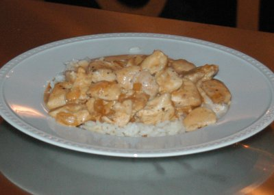

| Zutaten: | |||
| 4 Personen | 2 Personen | 1 Person | |
| 1 | 1/2 | 1/4 | Chilischote |
| 1 | 1/2 | 1/4 | Schalotte oder kleine Zwiebel |
| 600 g | 300 g | 150 g | Pouletbrüstchen |
| 1 El | 1/2 El | 1/4 El | Bratbutter |
| 1/2 dl | 1/2 dl | 1/4 dl | Whisky |
| 1 El | 1/2 El | 1/4 El | Butter |
| Salz, Pfeffer aus der Mühle | |||
| 1 El | 1/2 El | 1/4 El | Tomatenpüree |
| 2 dl | 1 dl | 1/2 dl | leichte Hühnerbouillon |
| 2 El | 1 El | 1 El | Ketchup |
| 1 El | 1/2 El | 1 Tl | Worcestershiresauce |
| 1.5 dl | 0.75 dl | 0.5 dl | Rahm |
Chili halbieren, entkernen und fein hacken.
Schalotte oder Zwiebel schälen und hacken.
Pouletbrüstchen in grosse Würfel schneiden und mit Salz und Pfeffer würzen.
Bouillon zubereiten.
Den Backofen auf 80°C vorheizen und eine Platte mitwärmen.
In einer Bratspanne die Bratbutter erhitzen. Die Pouletwürfel in 2 Portionen rundum je nach Grösse der Fleischstücke 2 - 2.5 Minuten anbraten. Sofort auf die vorgewärmte Platte geben und im 80°C heissen Ofen 30 -45 Minuten nachgaren lassen.
Den Bratensatz mit Whisky auflösen und durch ein Siebchen giessen. Zur Bouillon giessen und beiseite stellen.
Die Butter schmelzen. Chili, Schalotte und Tomatenpüree andünsten. Mit Whiskyflüssigkeit und Bouillon ablöschen. Ketchup und Worcestershiresauce beifügen, aufkochen und alles auf knapp 1 dl einkochen lassen.
Den Rahm halb steif schlagen. Unmittelbar vor dem Servieren in die leicht kochende Sauce rühren und diese wenn nötig nachwürzen.
Zum Servieren Sauce über die Pouletwürfel geben.
Pro Person: 22g Fett, 29g Eiweiss, 4g Kohlenhydrate, 1567 kJ, 374 kcal
Kochen 1/03
Super! 18.1.2003 RE
Hat auch am 17.4.2012 fein geschmeckt. Musste aber sorgfältig auf das Rezept schauen um nicht die Schritte durcheinander zu bringen. Habe das Rezept auch etwas begradigt. RE
@LINKBACK_TAG@ @WAKELOCK@